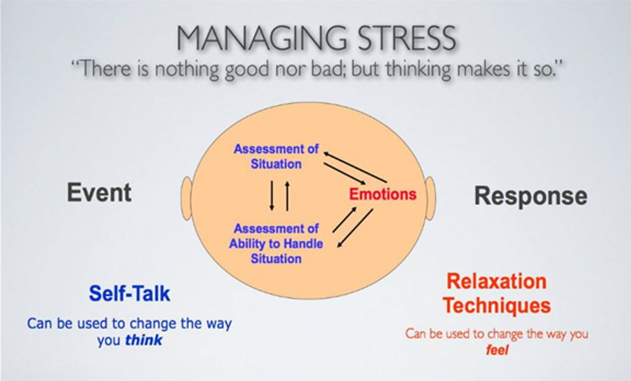
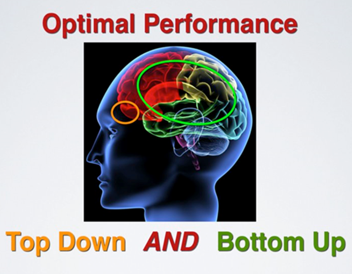
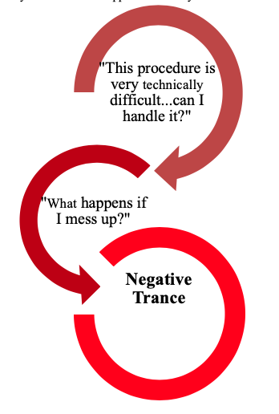
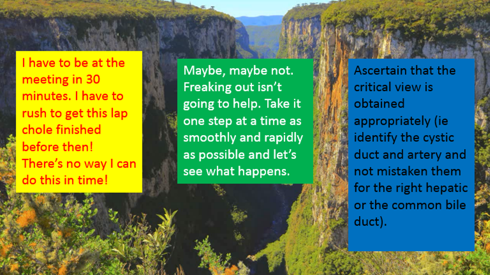
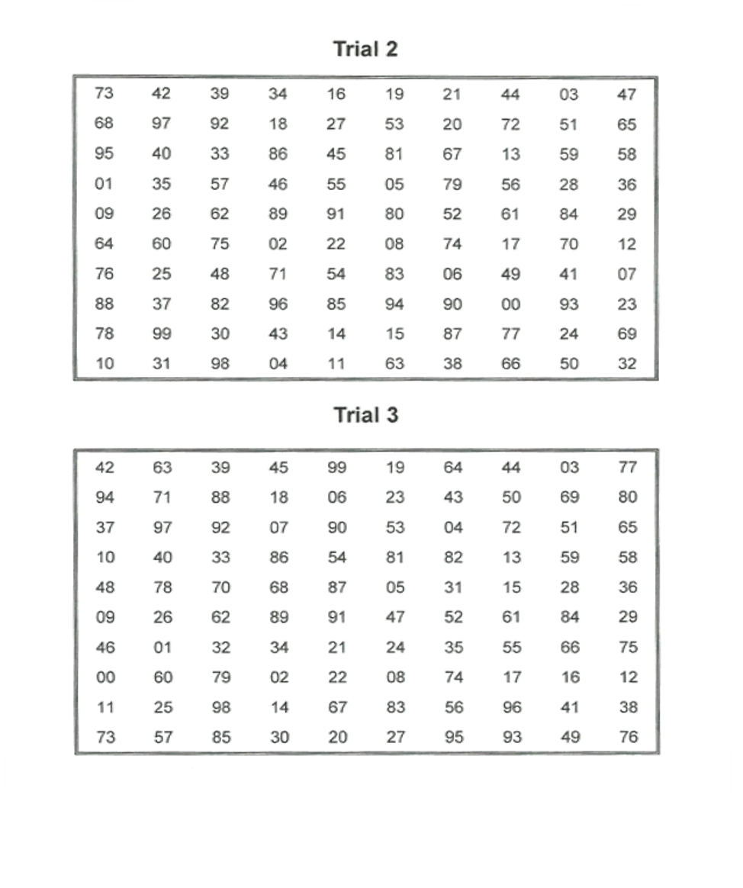

Attention/Thought Management
4.1 Stress Management
4.1 Stress Management
-
Our perception and interpretation of events determines whether or not we experience a situation as stressful.
-
As our brains receive neural transmissions (i.e., input) from our various senses, there are three primary processes that occur within nanoseconds that influence each other: the bottom-up brain rapidly reacts automatically to the experience and triggers an emotional reaction; the top-down brain cognitively assesses the situation and assesses one’s ability to respond to that situation.

-
The processes on the left-hand side of the diagram are those of the top-down brain; those on the right-hand side involve the bottom-up brain.
-
The emotional reaction of the bottom-up brain can be managed through rapid relaxation (i.e., the techniques covered in the last module), whereas the processes of the top-down brain – assessment of the situation and one’s ability to handle it – can be managed through self-talk (i.e., covered in this module.
-
Attention Management: A.I.R.
-
Reiterating key concepts: The key to success in any performance situation is knowing what is essential, keeping your attention on the essential and ignoring distractions. Thinking can be one of the major distractions
to optimal performance.
-
If your attention is “off target”, the most efficient technique for getting back on target is “AIR”.
- A- Aware that you’re off target
- I- Interrupt the pattern of thinking
- R- Refocus your attention back on target
-
Increasing Awareness with Mindfulness
-
Mindfulness is a bottom-up neurological sense of awareness, facilitated by paying attention in a sustained and particular way: purposefully, in the present moment, and non-judgmentally.
-
Mindfulness training can enhance performance by helping you fully immerse yourself in the task you’re performing, which prevents cognitive distraction from getting in the way. As we’ve discussed in this module already, thinking can be one of the most significant distractions to your performance.
-
Methods of mindfulness training:
- Mindfulness Bells
-
Pick a few ordinary activities from your daily life that you can turn into “mindfulness bells”, which can act as reminders to stop and attend to the task you’re performing. Do this by stopping yourself from thinking, and fully immerse yourself in the present moment.
-
First two bites of any meal
-
First two sips of morning coffee
-
Washing dishes
-
Waiting at red lights
-
Waking up (start day with mindfulness in your bed before you run through your “to do” list for the day)
-
Connect and scan your body (for any tension or physiological signs of stress)
-
Practice mindfulness of your breathing during centered breathing exercises
Reflection: Do you already engage in mindfulness? In what ways do you already practice mindfulness?
-
Thought Management

-
Optimal performance involves not only automation of fine-motor skills; it also involves the top-down neurology of thinking.
-
Self-talk during the learning phase for technical skills guides the execution of physical actions until a routine is established that can help automate the behavior as a bottom-up process.
-
Complex procedures, such as those in surgery, have specific points where cognitive mediation is necessary to determine the most appropriate course of action.
-
Cognitive mediation is required whenever an individual needs to redirect an impulsive reaction of bottom-up neurology, such as the physiological response to an emotional hijack.
Reflection: What situations in surgery could prompt you to switch neurological processes from bottom-up neurology to active, cognitive effort?
-
Excellent performance also involves anticipation and preparation before a performance, plus debriefing and assessment after a performance.
-
The process goals for these situations involve thinking and assessment, just be certain that your thinking optimizes your performance.
-
Focus on what you DO want to happen: One common error with self-talk is thinking about what you don’t want to happen rather than focusing on what you DO want to happen. With your action plan it’s important to identify effective self-talk that directs your attention to precisely what you want to do as opposed to what you want to avoid.

-
Snap out of it! If you find that you are starting to put yourself in a negative trance, the solution is simply: WAKE UP!!! Whatever you’re doing, STOP it and do something different. Back off; take a break; shift your attention; anything, but do not continue down the path. This is a great opportunity to use the A.I.R. refocusing technique with
a powerful interruption such as a trigger breath or a physical interruption such as clapping your hands or physically changing your external environment.
-
Redirecting with Believable Counters: Once you stop the negative trance, you need to direct your thoughts and attention to things you can control and actions that will optimize your performance. This task is challenging because you become conditioned where one negative thought triggers another. For each negative thought, you want to develop a believable counter that you can re-program as a response. You cannot discount your feelings and fears with a simple positive statement. It must be believable and realistic.

-
Reprogramming Tip: In developing counters to negative thoughts, it’s critical for the new responses to become automated in the same fashion as foreign languages, and to tailor the counters to your own internal language (i.e., thinking in the foreign language).
This automated process is developed through repeated pairing and practice through visual recall and association, which facilitates an automated neurological process. Once this process becomes automated, you will be able to immediately counter negative thoughts
without cognitive mediation (i.e., like responding in the once foreign language without having to actively think of verb conjugation).
Exercises
Exercise: Creating believable counters to negative thoughts. Write down negative thoughts you have experienced during surgical or FLS training performance (left column). Then, write down a believable counter that you could make to redirect your attention back
to the task (right column).
Negative Thoughts:
Counter
Example: I have to be at the meeting in 30 minutes. I have to rush to get this lap chole finished before then! There’s no way I can do this in time!
Counter: Maybe, maybe not. Freaking out isn’t going to help. Take it one step at a time as smoothly and rapidly as possible and let’s see what happens.
Negative Thoughts
Counter
Submit Exercise
